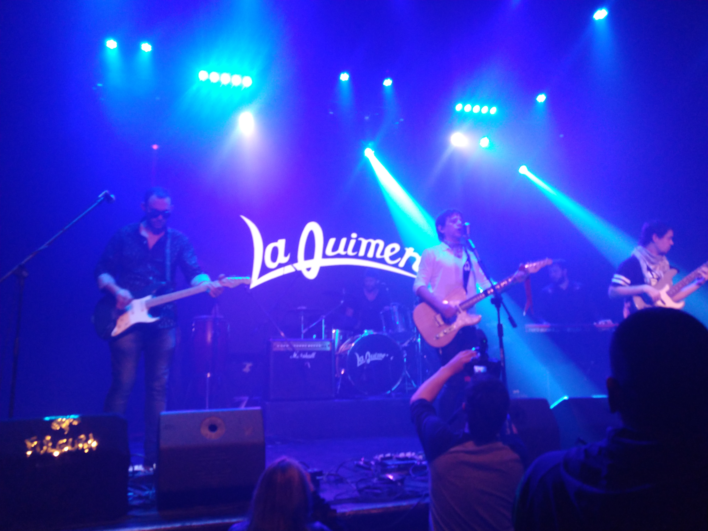
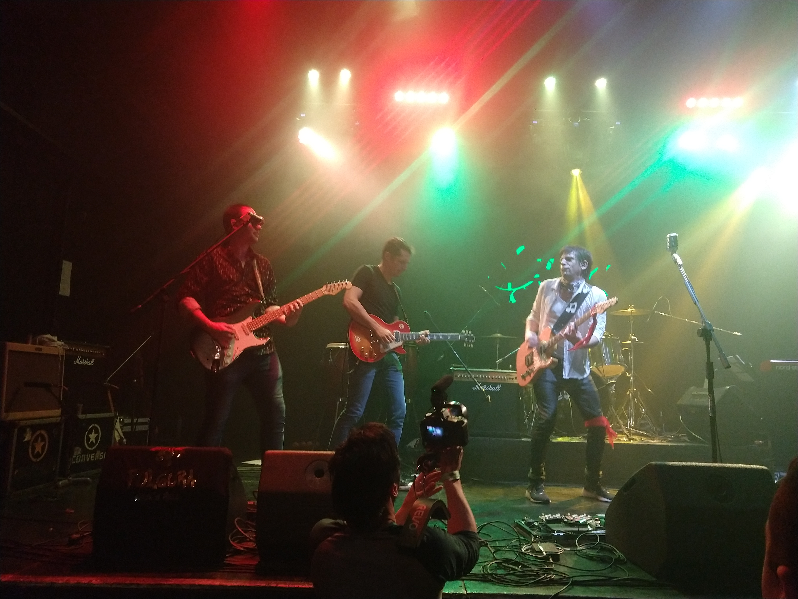

El Rock como la Vida
El rock es un estilo de vida, un emblema, un manifiesto ante el mundo y una elección ideológica. Es mucho más que música. Es fuego, sangre en las venas, pasión y amor propio para transitar las adversidades de lo cotidiano. Arriba del escenario, el rock es adrenalina y vértigo contagioso. Abajo es la vida misma, esa en la que no hay que aflojar en pos de un sueño. Y este sueño llamado “La Quimera”, que comenzó a volar en la primavera de 1999, que se plasmó en un par de cassettes y que desembocó en los 13 temas de “El veneno de tu soledad”, el álbum debut de 2004, se reaviva a fondo en este 2018 con nuevo disco en modo de un EP compuesto por seis canciones y la preproducción del tercer disco de estudio. Volvió “La Quimera” a los escenarios porteños y del Gran Buenos Aires después de unos años de parate porque así es el rocanrol: imparable. La vida pone obstáculos, hace difícil combinar la pasión por la música con los bolsillos al menos a medio llenar y a veces tira para abajo. Pero si hay pasión, hay esperanza. Y la pasión de “La Quimera”, el rocanrol, no podía estar más quieta. La voz, la guitarra rítmica y la energía de Diego Rossi agitan desde el centro del escenario. La púa de Julián Bajraj entre las cuerdas de la guitarra baila y hace bailar. La base y el ritmo de Nicolás Lagreca sacude desde el bajo. Y la potencia de Juan Pablo País en la batería hace el resto. Ellos son “La Quimera”. Ellos aman el rocanrol.

En Cuarentena
¿Cómo habían arrancado el año antes de la pandemia?
Habíamos arrancado el año en el Partido de la Costa con una agenda bien llena; la idea para 2020 era tocar a pleno (Risas) por el Gran Buenos Aires y el interior: tanto es así que, durante enero, febrero y marzo, habíamos tocado en Santa Teresita, San Bernardo, Costa Azul, Lomas del Mirador, Avellaneda y Moreno. Nos quedó pendiente la primera parada en Capital que se iba a dar en Makena el 18 de abril… pero no llegamos.
¿Cómo los viene tratando la cuarentena? ¿Cómo los afectó artísticamente?
La vamos llevando como todos, tratando de cuidarnos y cuidar al prójimo y al mismo tiempo no queremos quedarnos quietos. Como no estamos ensayando, nos pusimos a grabar la preproducción de lo que será nuestro próximo disco. Lo hacemos desde nuestras casas usando nuestras computadoras. Nos vamos pasando las pistas de lo que grabamos y cada uno va sumando su instrumento. Es un método que nunca utilizamos ya que siempre preferimos tocar y mirarnos las caras, pero no queda otra y le estamos sacando jugo a esta situación.
¿Qué nos pueden contar sobre “Todo Me Da”, el video que estuvieron sacando en estos días?
«Todo Me Da» es uno de los 12 o 14 temas nuevos que te comentaba anteriormente y fue uno de los primeros que arrancamos a grabar para un festival online llamado Culturastonerock. Nos sirvió como aprendizaje para esta nueva etapa y aparte quedó buenísimo. En cuanto a las imágenes, les pedí a los chicos que me pasaran determinadas tomas desde la casa de cada uno y las edité para darle una onda al video. ¡Todo a pulmón!
¿Cuáles son los discos/artistas que más estuvieron sonando en sus equipos durante la pandemia?
Hay cosas que nunca faltan, como los Stones, Richards, Tom Petty, etc. Pero sin duda lo que más sonó fue La Quimera, ¡ya que estamos demeando a pleno!
¿Qué lugar queda para el arte dentro de la rutina que impone el contexto?
Hay que buscar espacios en medio de toda esta rutina, que es lo más difícil, y poder conectarse en cualquier momento con el lado creativo. Por suerte no tenemos inconvenientes con eso y el arte está bastante presente en nuestras casas.
Tienen más de 20 años de trayectoria: ¿cuáles son los desafíos que quedan por delante?
Los desafíos siempre se van renovando; en estos momentos estamos demeando nuestro próximo disco y produciendo dos nuevos videos. Más adelante serán shows vía streaming y aún más adelante queremos que nuestra música llegue a todo el país. Hay mucho por hacer y tenemos mucho para dar.
Cuando el contexto lo permita: ¿cuáles son los planes a futuro?
¡Queremos grabar nuestro tercer disco y salir a tocar por todos lados!

El Momento Indicado
Cuando hablamos de quimera, el diccionario lo define como un sueño o ilusión que es producto de la imaginación y que se anhela o se persigue pese a ser muy improbable que se realice.
En la primavera de 1999, La Quimera empezó a volar y aquellos primeros demos derivaron en un disco debut, “El Veneno De Tu Soledad” (2004), publicado años después bajo la producción de Roy Quiroga, baterista de Ratones Paranoicos.
En aquellos años dorados, el grupo se dio el gusto de compartir escenario con La 25, Callejeros, Kapanga, Blues Motel y Heroicos Sobrevivientes, entre otros, en lugares paradigmáticos de una época inolvidable, como: Cemento, El Borde de Temperley, El Mocambo de Haedo, Teatro Arlequines, Teatro de la Comedia, Liberarte, El Roxy, Petecos, XLR Club El Dorado, Hard Rock café, Niceto, El Condado y Obras.
Sin embargo, auto sustentar una banda under no es algo sencillo y pasaron mil cosas que los alejaron de los escenarios por siete años. Ellos dicen que nunca se pelearon y fue entonces que ese fuego sagrado volvió a arder y la maquinaria entro nuevamente en funcionamiento.
De todo eso charlamos con los músicos que integran La Quimera: Diego Rossi, voz y guitarra rítmica, Julián Bajraj en primera guitarra, Nicolás Lagreca en bajo y Matías Schiratti en batería.
Después de un par de vueltas en falso, la banda se reencontró hace ya un par de años y todo fluyó de inmediato. ¿Qué cambió para que esto se haya dado y por qué no se dio las veces anteriores?
Julián: Las veces que nos juntamos, previo a la vuelta de la banda, habíamos hecho algunos ensayos salteados pero no se dio. No era el momento. Siempre alguno tuvo algún inconveniente para poder seguir o no pudimos llevarlo adelante por alguna razón. La última vez que nos juntamos ya el primer día nos dimos cuenta de que era eso lo que queríamos y en el primer ensayo ya craneábamos para poder hacerlo dos veces por semana así como siempre. Fue el momento indicado.
Alguna vez dijeron que, en este último EP a diferencia de su primer disco, lo hicieron “de una manera más profesional” de su parte. ¿En qué cosas se notó más eso? ¿Cómo manejaron, catorce años después y más maduros, esa efusividad en el estudio?
Diego: El segundo disco lo hicimos así porque veníamos con toda la experiencia de todo lo aprendido con Roy (Quiroga, baterista de Ratones Paranoicos) en álbum debut y lo notamos más en lo que no tocamos que en lo que tocamos. En los silencios de la música, en los espacios, en las melodías, en los sonidos de las guitarras. Estuvimos mucho más puntillosos en todo eso, por lo menos nosotros notamos la diferencia ahí. En cuanto al manejo de la efusividad, estuvimos conducidos por Juanchi (Bisio), que hizo todo de manera espectacular, y solo nos dejamos llevar.
¿Qué cosas le aportó Juanchi Bisio al sonido de La Quimera?
Nico: Nos aporta todo lo que tiene que ver con el sonido de guitarras. Como complementarlas, setear distintos equipos y utilizar distintos tipos de violas para llegar al sonido que, creemos, compone cada uno de los temas.
Con muchos años de distancia, ¿qué diferencia hubo entre el aporte de Juanchi y el de Roy Quiroga a sus canciones?
Diego: Considerando todo el tiempo que pasó en el medio, ¡pobre Roy! El disco que hicimos con él fue un poco más largo y trabajamos un poco más en la producción de varios temas. En cambio, con Juanchi fue un EP. Teníamos ocho o nueve canciones y grabamos seis. Creo que Juanchi se metió más adentro de la canción y de los arreglos musicales. En cambio, con Roy usamos conceptos más de banda, de arreglos en general, cortes y ese tipo de cosas. Fueron dos producciones terribles y aprendimos muchísimo por lo que estamos muy ansiosos de grabar nuestro tercer disco y aplicar todo ese aprendizaje.
Son una banda del vivo, indudablemente, que tocaron siempre mirándose a la cara. ¿Qué tan difícil les fue adaptarse a grabar desde sus casas con su instrumento y compartir el material de manera digital? ¿Cuáles son los pros y las contras de esto?
Julián: Fue dificilísimo adaptarnos a grabar cada uno desde su casa. Primero para aprender a usar bien programas de edición, algunos de nosotros, y segundo, grabar y tocar uno mismo es bastante complicado. No es lo mismo que otro te grabe y vos solo tocar. Tenes que tirar el centro y cabecear, pero es posible, uno se va adaptando a todo eso y tuvimos un buen resultado. Lo mejor que tiene ese sistema, o lo único bueno que yo le veo, es el poder editar uno su propio instrumento en el tiempo, la hora y la manera que quiera.
¿Qué criterio usaron para seleccionar esas canciones que les grabaron de onda y que le dieron vida a “El Momento Indicado”? ¿Cómo balancearon lo que le gusta a su público, digamos “las fijas”, y lo que Uds. querían incluir?
Nico: “El Momento Indicado” fue un disco de reunión de alguna forma, por buscarle alguna expresión. Después de un parate que tuvimos en un momento, nos reencontramos en la sala primero para hacer un show y ver como nos sentíamos, qué nos pasaba en ese momento. La idea del disco empezó casi como naturalmente a surgir dado que el resultado de esos shows fue hermoso. Un reencuentro no solo entre nosotros, sino también con la gente en sí. Esa devolución nos animó y quisimos ir más allá. En realidad, con lo que comenzamos, fue con los temas que más veníamos tocando en la última parte de la etapa previa al parate. Temas que tocábamos en vivo, que habíamos “demeado” muchos años atrás y con los que empezamos a coquetear en los ensayos para esas primeras presentaciones. Nos volvieron a gustar, tanto el sonido como la devolución de la gente. Tenían otra estructura, otros pasajes que ahora ya no están, justamente por laburo de Juanchi (Bisio). El tema de esas canciones fijas… (piensa), somos muy auto críticos en ese sentido, nos gusta poner también las canciones en consideración de la gente antes. Las probamos en un show, ver qué pasó, cómo nos sentimos al tocarlas, que tan naturalmente se nos dan esos temas. Cuando algo es muy forzado, es mejor no avanzar sobre eso. Más si estamos hablando de arte, se supone que uno busca cierta espontaneidad en la expresión. Entonces, dicho esto, no sé si tenemos canciones que vos decís “esta no pueden faltar en un disco”. No estoy tan seguro, creo que -por lo menos desde el vamos- “esta canción me gustó y tiene que estar sí o sí”. Sabemos que no puede faltar cuando la gente te hace sentir que no puede faltar. No tenemos grandes conflictos en ese sentir.
Sin ir más lejos, tienen 3 demos publicados “Dispara”, “Todo Me Da” y “Abeja”. ¿Qué tanto les importa o que prioridad tiene para ustedes registrar esas canciones en un disco hoy día?
Diego: Es muy importante eso. Somos de la vieja escuela y nos cuesta largar de a uno por tanda, que es lo que se usa ahora. Creo que cuando terminemos de grabar nuestro tercer disco vamos a estar más tranquilos y largar de a una o dos canciones con ese método.
Por amor al arte
¿Qué es lo más difícil de tener una banda under y llevar ese estilo de vida tan diferente a lo “común” que es vivir por y para la música?
Julián: Para tener una banda under hay que tener un amor muy grande por lo que uno hace. El sacrificio que demanda es mucho, hay que ocuparse de muchas cosas. Las bandas independientes tienen que gestionarse todo para ellas, ya sea recitales, grabaciones, absolutamente todo lo que conlleva eso. A veces uno dice “un recital” y para lograr eso la banda tiene que ocuparse de mil cosas: Desde transar con el bolichero hasta ensayar o comprar insumos; vender entradas, agitar en las redes…. uno tiene que amar mucho lo que hace para salir adelante y tocar con gente que quiera lo mismo, eso es lo que vale.
Diego Rossi dijo alguna vez que “si no es con La Quimera” no goza de la música y que los años en los que no tocó no escuchó música. ¿Les pasó lo mismo a los demás? ¿Qué hubiera pasado en este período de aislamiento si no habrían vuelto con la banda?
Julián: A cada uno nos pasó distinto. A Dieguito le pasó eso, no se relacionó más con la música fuera de la banda ni siguió tocando en el período en que estuvimos separados. Por otro lado, el bajista siempre tuvo varios proyectos personales y siguió con eso o, también, colaborando con otros amigos músicos. Por mi parte, nunca armé ningún proyecto propio ni nada, sino que siempre seguí tocando pero colaborando con amigos o con algún músico conocido, ya sea tocando en vivo o en alguna grabación, pero siempre relacionado a la música porque es lo que amo. No tanto como cuando uno está en una banda, es distinto. Si en este aislamiento no hubiéramos estado juntos con La Quimera, nos habríamos aburrido muchísimo más.
¿Qué es lo más lindo de tocar rock and roll con amigos?
Diego: Es relativo, hablo de lo que me pasa a mí. Lo que más me gusta y disfruto de eso es que hay mucho laburo atrás que no se ve. Cosas que compartimos que podríamos llamar “el vestuario” de una banda, el backstage. Todo los esfuerzos que hacemos cuando estamos en la sala, componiendo, discutiendo, debatiendo por las canciones y el momento mágico de estar tocando en vivo, mirarnos y sentir toda esa energía que estamos generando y no olvidar todo lo que hemos vivido para llegar a ese momento. Para mí lo más lindo es todo lo compartido que confluye en una presentación en vivo, que es lo que más nos gusta hacer: tocar en vivo.
El rock te espera, pibe
¿Cómo manejan eso de que el rock ya no es protagonista hoy día de los primeros planos de la música?
Nico: Quizás me voy a poner un poco filosófico. Uno lo primero que tiene que entender, como artista, es que uno es sensible a determinado tipo o forma de expresión. Es decir, no somos buenos para todas las distintas expresiones que existen en el arte. Uno es hábil para ciertas cosas en particular, a menos que seas un genio del arte, no sé, como Leonardo da Vinci. Uno no puede abarcar todo. Asimismo lo que uno gesta como obra, las canciones, que tampoco son del gusto de todos, hay quienes son sensibles a esa obra y quienes no. Eso sucede por la competencia cultural, es decir, se da porque existe una simbiosis entre quienes escuchan la música que hacemos y nosotros. Hay una sensibilidad similar entre quienes creamos esa música y los que la escuchan. Entonces, no hay que tender de entrada a la masividad. No debería ser un hecho que le importara a nadie cual es el plano del rock hoy en día en el mundo. Uno toca para la gente que es sensible a la música como lo es uno. Si vos querés, nuestro público está delimitado de alguna forma. Sabemos que hay mucho otro público sensible a lo que hacemos, no creo que sea un buen plan transformar la esencia de la banda en función de que es lo que más se escucha hoy en día. Así como los folcloristas siguen tocando folclore. ¿Está a primer plano a nivel mundial? No, pero creo que en la medida que uno va creciendo y explora la música llega a un punto en el que vuelve a las raíces. Un día uno vuelve a escuchar una zamba, una chacarera o un tango. Cosas que quizás, al menos yo, de adolescente no le prestaba la atención y escuchaba que mis padres me hablaban de ese otro tipo de música. De alguna forma siento que esos otros estilos de música siempre esperan por uno. Un día me iba a dar cuenta de que el folclore y el tango tienen grandes obras. Con el rock pasará lo mismo. Puede ser que las nuevas generaciones no estén abocadas a escuchar rock, sin embargo creo que el rock siempre los va a estar esperando para que le den una oportunidad.
Para ustedes, arriba del escenario, “el rock es adrenalina y vértigo contagioso”. ¿Cómo se imaginan un show suyo con público cuando la pandemia finalice?
Diego: Estamos hablando de algo imaginario. Obviamente nos gustaría que sea como los shows de antes, con la gente abrazada y saltando, sin distanciamiento social. Sin ningún fantasma atrás ni ninguna pandemia. Esperamos ese contacto con la gente, bajarnos del escenario, los abrazos, los saludos. Ojala se pueda dar dentro de poco tiempo.
¿Cómo preparan este streaming que se viene? ¿Cómo piensan que lo va a recibir la gente que los sigue? ¿Qué significa para ustedes poder tocar juntos otra vez?
Diego: Nos estamos preparando desde hace un tiempo ya, con protocolos en la sala de ensayo. Estamos a full, con muchísimas ganas. Pensamos que lo van a recibir con ansiedad y alegría, se da en este momento en el que, si Dios quiere, estamos empezando a salir un poco de este problema que atravesamos. Se vienen las fiestas y, además, es el primer show vía streaming de la banda, la primera vez que nos van a poder ver un ratito, más allá de los vivos de Instagram y las canciones que presentamos. Para nosotros volver a tocar juntos es gran parte emocional de nuestras vidas, estamos super emocionados, pensando en miles de detalles, preparando todo para que salga hermoso, que todos lo disfruten y, si Dios quiere, arrancar el año que viene con todo.